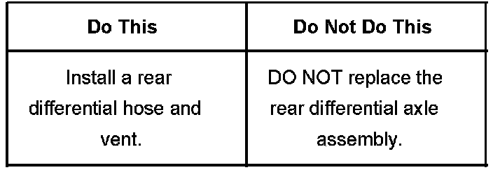
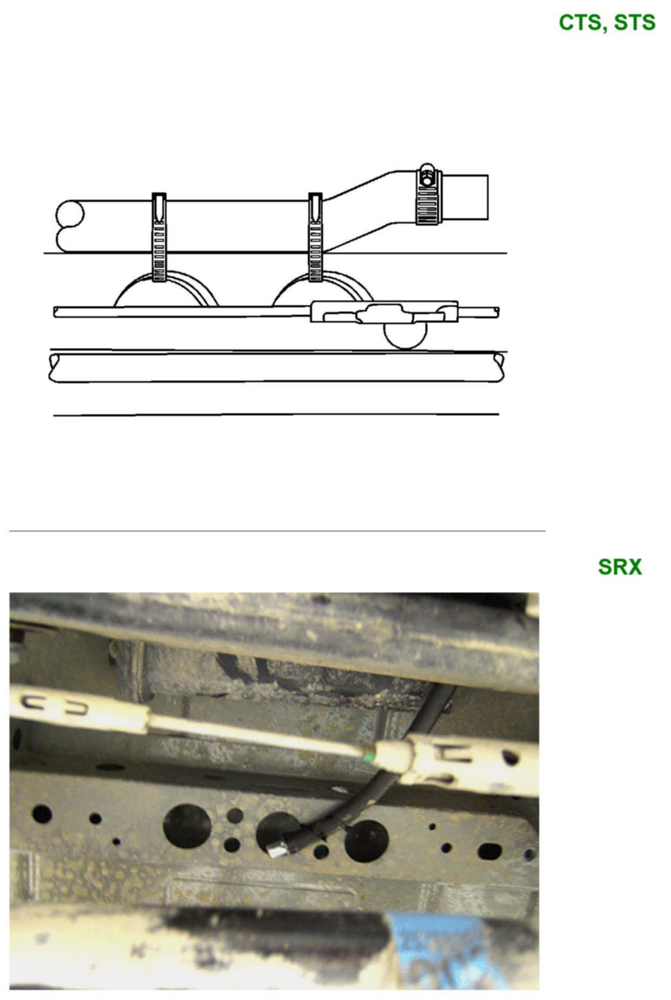
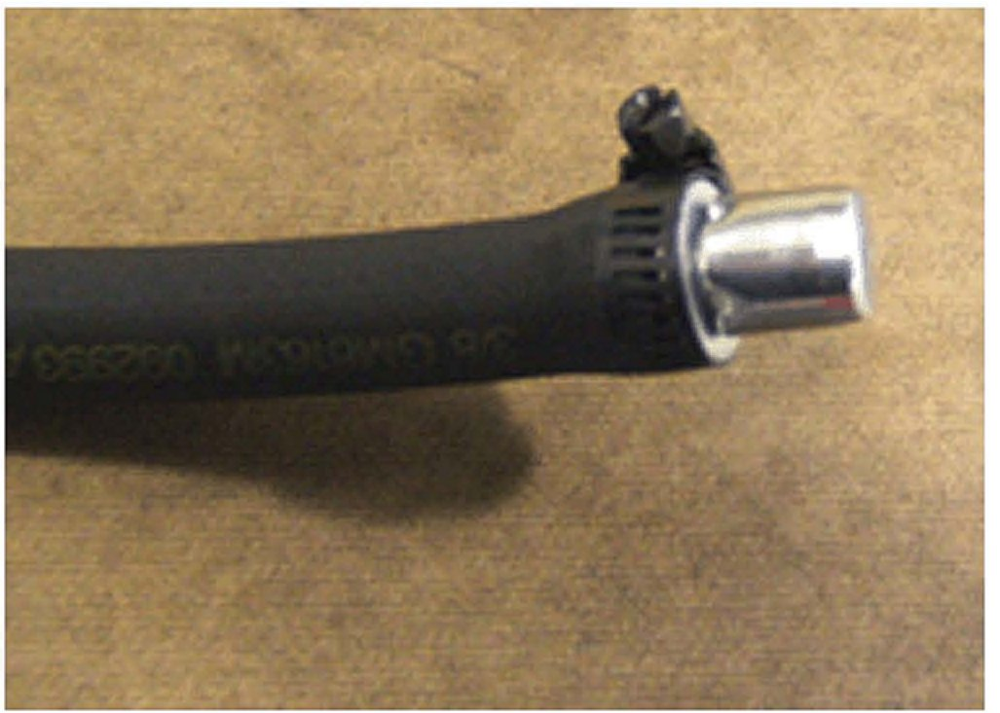
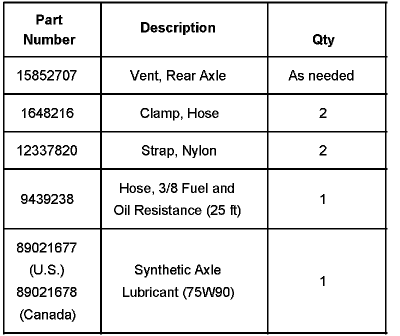
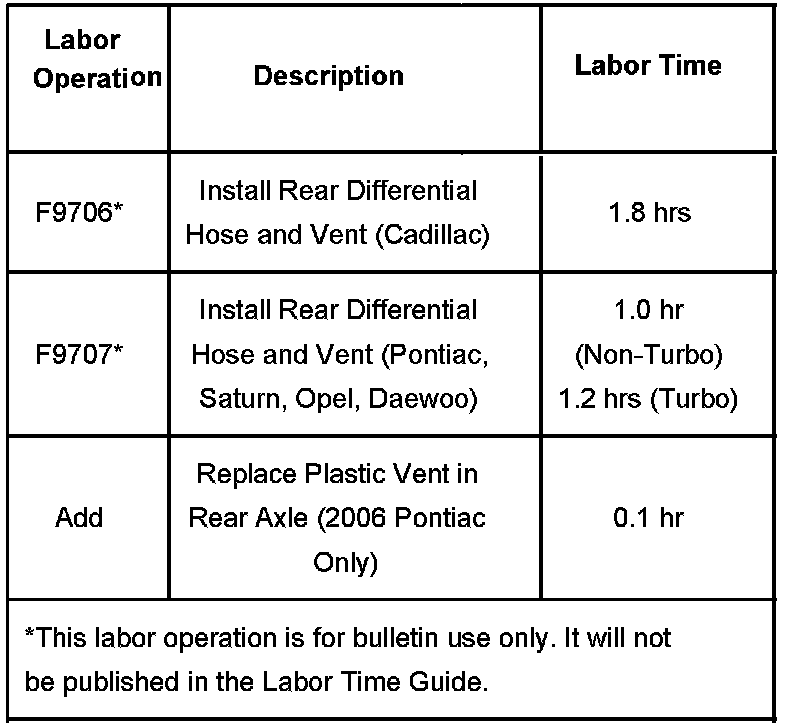

Drivetrain - Fluid Leak From Rear Axle Vent
Bulletin No.: 07-04-20-001ADate: November 08, 2007
TECHNICAL
Subject:
Axle Fluid Seeping or Leaking From Rear Axle Vent (Install Rear Differential Hose and Vent)
Models:
2003-2007 Cadillac CTS
2004-2008 Cadillac SRX
2005-2008 Cadillac STS
2006-2008 Pontiac Solstice
2007-2008 Saturn SKY
2007-2008 Opel GT
2007-2008 Daewoo G2X
Supercede:
This bulletin is being revised to update the information and add models and model years. Please discard Corporate Bulletin Number 07-04-20-001 (Section 04 - Driveline/Axle).

Condition
Some customers may comment on fluid seeping or leaking from the rear axle.
Correction
Install a rear differential hose, clamps and a new metal differential vent following the procedures listed below:
CTS, SRX and STS Models
Place the vehicle in neutral.
Raise and support the vehicle. Refer to Lifting and Jacking the Vehicle in SI.
Determine if the leak is coming from the rear axle differential vent.
If the leak is not coming from the axle vent, then do not proceed to the next step. Refer to Rear Axle Lubricant Leak Diagnosis in SI.
Remove the rear propeller shaft. Refer to Rear Propeller Shaft Replacement in SI.
Place a jack stand under the rear axle assembly for support.
Remove the three rear axle bolts and nut.
Lower the rear axle enough to gain access to the rear differential vent, located on the top of the axle.
Pry the top of the metal rear differential vent cap off.
Discard the old vent cap and spring.
Obtain a 9.50 mm (3/8 in) inside diameter hose by 30.50 cm (12 in) long of rubber low fuel pressure/oil resistant hose or equivalent, a new differential vent, P/N 15852707, and two hose clamps.
Assemble the new vent onto the hose with a clamp.
Tighten the clamp.
Install the second clamp onto the hose.
Attach the other end of the rear differential hose assembly to the axle vent.
Position the second clamp around the rear axle vent and hose.
Tighten the second clamp.
Raise the axle assembly back into the vehicle.
Install the three axle bolts and nut.
Tighten
Tighten the bolts to 175 N.m (129 lb ft). Remove the jack stand.
To prevent a rattle from occuring, make sure the vent cap is not touching anything when tied down.

Tie strap the hose and vent assembly (referring to the graphic above, depending on the vehicle model). The CTS and STS should be strapped to the rear crossmember frame. The SRX should be strapped to the underbody sheet metal reinforcement.
An over-filled differential will cause fluid to seep out of the rear axle vent.
Check the differential fluid level. Refer to Rear Axle Lubricant Level Inspection in SI.
Clean off any axle fluid residue with GM Brake Cleaner, P/N 12378392 (in Canada, P/N 88901247), or the equivalent.
Install the rear propeller shaft back into the vehicle. Refer to Rear Propeller Shaft Replacement in SI.
Solstice, SKY, GT and G2X Models
Some 2006 Pontiac Solstice models may have a plastic-style rear differential vent in the axle assembly. The plastic vent will need to be replaced with the new style metal vent, P/N 15852707.
Raise and support the vehicle. Refer to Lifting and Jacking the Vehicle in SI. Determine if the leak is coming from the rear axle differential vent.
If the leak is not coming from the axle vent, then do not proceed to the next step. Refer to Rear Axle Lubricant Leak Diagnosis in SI.
Remove the exhaust system. Refer to Muffler Replacement in SI.
Remove the driveline tunnel closet panel for vehicles equipped with a turbo. Refer to Driveline Tunnel Closeout Panel Replacement in SI.
Place a jack stand under the rear axle assembly.
Remove the rear axle bolts.
Lower the axle assembly to gain access to the vent.
Pry the top of the metal rear differential vent cap off.
Discard the old vent cap and spring.
Obtain a 9.50 mm (3/8 in) inside diameter hose by 35.50 cm (14 in) long of rubber low fuel pressure/oil resistant hose or equivalent, a new. differential vent, P/N 15852707, and two hose clamps.
If the clamp is not positioned correctly, the vent may fall off.

Assemble the new vent onto the hose and clamp the outer shoulder of the vent. Referring to the graphic above.
Tighten the clamp.
Install the second clamp onto the hose.
Attach the other end of the rear differential hose assembly to the axle vent.
Position the second clamp around the shoulder of the rear axle vent and hose as you did previously.
Tighten the second clamp.
Raise the axle assembly back into the vehicle.
Install the axle bolts.
Tighten
Tighten the bolts to 175 N.m (129 lb ft). Remove the jack stand.
To prevent a rattle from occuring, make sure the vent cap is not touching anything when tied down.
Tie strap the hose and vent assembly to the left body cross brace, referring to the graphic above.
Over-filling the differential will cause axle fluid to seep out of the rear axle vent.
Check the differential fluid level. Refer to Rear Axle Lubricant Level Inspection in SI.
Clean off any axle fluid residue with GM Brake Cleaner, P/N 12378392 (in Canada, P/N 88901247), or the equivalent. Install the driveline tunnel closet panel if equipped with a turbo. Refer to Driveline Tunnel Closet Panel Replacement in SI.
Install the exhaust system. Refer to Muffler Replacement in SI. Parts Information

Parts Information
Warranty Information

For vehicles repaired under warranty, use the table.

Disclaimer